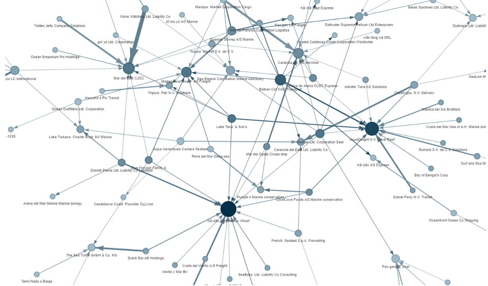
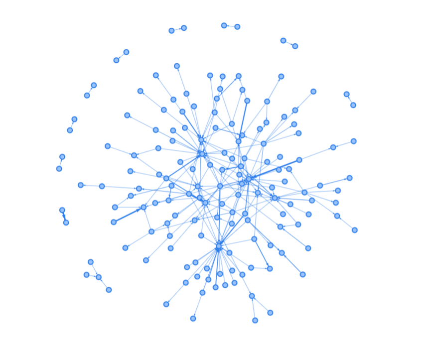
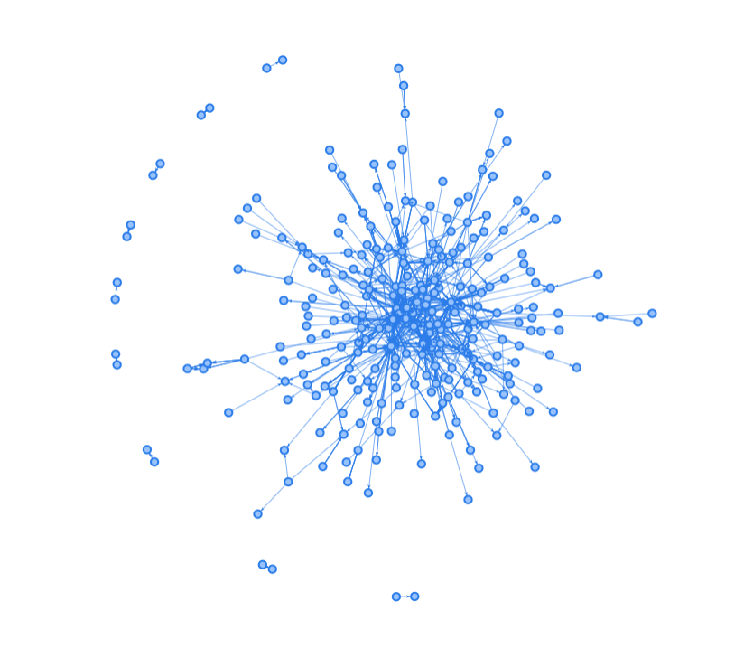

VAA_Team8_Project
Visual Analytics and Applications - Team 8 Project
Background
Illegal, unreported, and unregulated (IUU) fishing refers to fishing activities that are conducted in violation of both national and international fishing regulations (NOAA Fisheries, n.d.). Such fishing activities pose a significant threat to marine biodiversity, and sustainable fisheries. It undermines conservation efforts, leads to overfishing, and negatively impacts the livelihoods of fishing communities.
To identify companies who are potentially engaged in such unscrupulous activities, the country of Oceanus has enlisted the help of FishEye International. Using incomplete import and export data of Oceanus’ marine and fishing industries, Fisheye was able to generate a knowledge graph, in the hopes of uncovering business relationships and patterns that can aid in the detection of IUU fisheries. While node-link diagrams offered a useful overview of the knowledge graph at a high level, this study aims to create visualizations that offer more detailed insights into patterns involving entities within the knowledge graph.
Objectives
With reference to Mini Challenge 2 of the VAST Challenge 2023, we aim to build an interactive Shiny app in order to answer the following questions:
Use visual analytics to identify temporal patterns for individual entities and between entities in the knowledge graph FishEye created from trade records. Categorize the types of business relationship patterns you find. Limit your response to 600 words and 6 images.
Evaluate the sets of predicted knowledge graph links FishEye has provided using visual analytics. Which sets are most reliable for completing the graph? Limit your response to 600 words and 6 images.
Illustrate how your visual analytics approach can be used to identify new patterns and/or anomalies that are present in the knowledge graph after you have added the links you deemed reliable in question 2. Limit your response to 300 words and 4 images.
Identify companies that fit a pattern of illegal fishing. Use visualizations to support your conclusions and your confidence in them. Limit your response to 300 words and 4 images.
The Data
The data sets were obtained from the VAST Challenge 2023 website, and consists of a knowledge graph and 12 bundles.
The 12 bundles (namely carp, catfish, chub_mackerel, cod2, herring, lichen, mackerel, pollock, salmon, salmon_wgl, shark and tuna) are generated by FishEye International using an AI program, each consisting of link suggestions that can potentially be added to the main graph for additional information.
The knowledge graph and the 12 bundles each contain 2 data frames, namely “nodes” and “links”.
Node Attributes
| Variable | Description |
|---|---|
| Id | Unique ID assigned to each fishing company |
| Shpcountry | Country the company most often associated with when shipping |
| Rcvcountry | Country the company most often associated with when receiving |
| Dataset | Always “MC2” |
Edge Attributes
| Variable | Description |
|---|---|
| arrivaldate | Date the shipment arrived at port in YYYY-MM-DD format. |
| hscode | Harmonized System code for the shipment. |
| valueofgoods_omu | Customs-declared value of the total shipment, in Oceanus Monetary Units (OMU) |
| Volumeteu | The volume of the shipment in ‘Twenty-foot equivalent units’. |
| weightkg | The weight of the shipment in kilograms. |
| dataset | Always ‘MC2’. |
| type | Always “shipment”. |
| generated_by | Name of the program that generated the edge. (Only found on ‘bundle’ records.) |
Methodology
1. Data cleaning and wrangling
Ensuring that the variables are formatted in the correct data type.
Handling of missing values
Transformation of variables (e.g. creation of new variables)
Aggregation of edges
2. Exploratory Data Analysis
Check timeseries distribution of variables.
Check hscode with most weights.
Decide on filtering criteria.
3. Building of the Shiny app
Design website layout
Build Shiny according to our analysis
4. The following is a non-exhaustive list of R packages that will be used for this challenge:
shiny: for building interactive web applicationsshinythemes: for customization of the Shiny appjsonlite: for loading and reading of “.json” filestidyverse: a collection of R packages used for data preparation and manipulationigraph: for network analysis and visualizationggraph: an extension of ggplot2 for the creation of network graphs.visNetwork: for creating interactive network graphsplotly: for generating interactive charts
Approach
Q1. Categorize the types of business relationship patterns
Network Graph Building:
An interactive network graph will be created using the visNetwork package. To identify potential major distributors/wholesalers and recipients, we will filter the nodes based on their high out-degree/in-degree edges. Additionally, we will explore networks between the top wholesalers and recipients using different hscodes to observe any variations in patterns among different product categories.
Centrality of nodes & categorize business relationships:
To determine the relationship between companies, metrics such as degree centrality or eigenvector centrality will be computed to measure centrality scores. The scores can be visualized by changing the appearance of the nodes.
Temporal Pattern Mining:
By observing shipping patterns over the same time period, we can then identify any abnormal relationships or patterns among these companies (e.g. companies who do not have any records for multiple years).
The following diagram is a proposed example of changing the appearance of the nodes based on centrality scores. The bigger the nodes, the higher the degree centrality score, while the darker the nodes, the higher the eigenvector centrality score.

Q2. Evaluating predicted knowledge graph provided by Fisheye
To determine which of the 12 AI generated bundles can be used to complete the main knowledge graph, facet nodes graphs will be plotted for each bundle. Bundles that provide the most useful information will be selected.
The figure below shows an early prototype of our proposed approach. As seen from the figure, cod2, lichen, salmon, shark and tuna bundles contain relatively fewer nodes compared to the other bundles, thus these bundles will not really value-add to our main network graph. Therefore, only bundles excluding the aforementioned bundles (i.e. carp, catfish, chub_mackerel, herring, mackerel, pollock, and salmon_wgl bundles) will be added to our main network graph.

Q3. Finding new patterns/anomalies
The links of the selected bundles will be combined with the links of the original knowledge graph. A new interactive network graph will then be created using the visNetwork package, which will allow us to identify any new patterns or anomalies that may emerge when the new links are added. Steps similar to those used in Q1 will be used in the pattern/anomaly detection.
The following diagram shows an early prototype of what our updated interactive network graph will look like, in comparison to the original network graph with no additional links.
| Original network graph |  |
| Network graph with links from selected bundles |  |
Q4. Identifying suspicious companies by new patterns
We will use the new patterns/anomalies detected during the previous step to aid in the identification of companies that are potentially suspicious. We will mainly look for:
Clusters or groups of companies that exhibit abnormal or unexpected patterns of connections, such as dense interconnections within a small group of companies
Fishers with high out-degree connections but significant variations across different years
Fishers with interrupted years lacking records
References
NOAA Fisheries. (n.d.). Understanding illegal, unreported, and unregulated fishing. NOAA. https://www.fisheries.noaa.gov/insight/understanding-illegal-unreported-and-unregulated-fishing